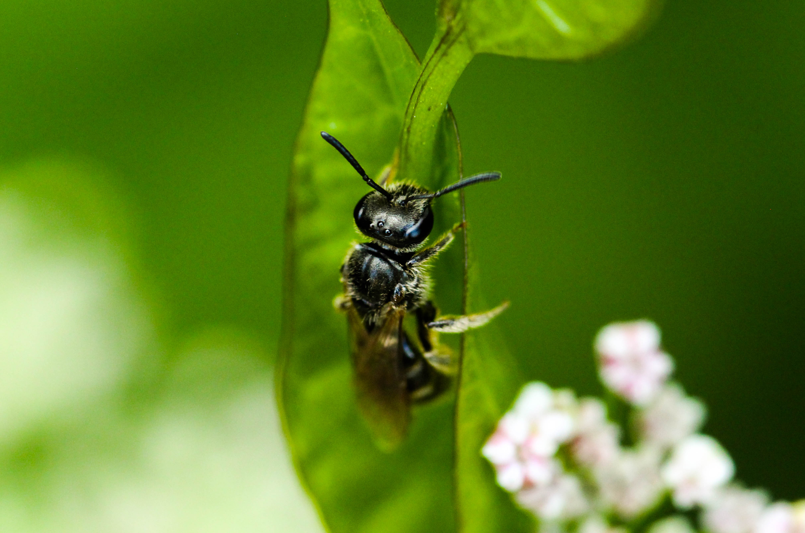
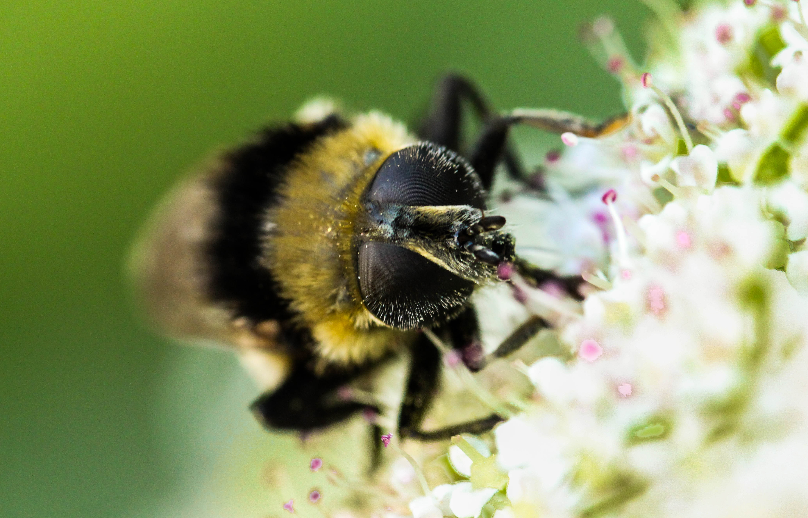
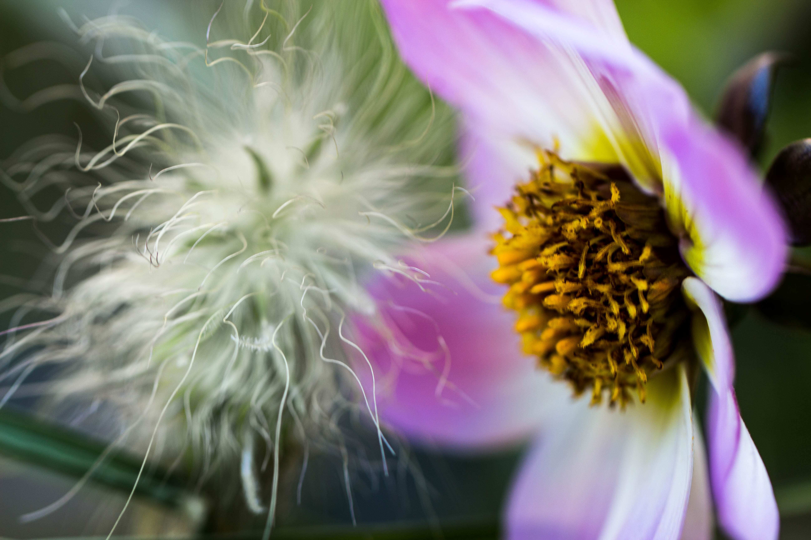

Kontakt
Kategorien
Start
Kontakt
Kategorien
Start
Um Makro-Bilder zu schießen brauchst Du vor allem 2 Dinge,
Das richtige Objektiv und sehr sehr viel Geduld.
Spezielle Makro-Objektive werden benötigt, da man um Makro-Bilder zu schießen, sehr nah an das zu fotografierende Objekt heran muss.
Normale Objektive sind auf diese kurzen Distanzen nicht mehr in der Lage, das Objekt scharf zu stellen.
Achte beim Kauf eines Makro-Objektivs unbedingt auf den Zusatz "1:1" da diese in der Lage sind, die Objekte in originalgröße auf den Sensor zu bannen.
Für den Anfang ist es allerdings auch möglich mit anderen Objektiven, besonders in Kombination mit sogenannten Zwischenringen, sehr ansehnliche Makro Bilder zu erstellen.
In diesem Fall ist Punkt 2 umso stärker gefragt.
Den meisten Spaß und die größte Faszination bringt in der Makrofotografie eindeutig das Fotografieren kleiner Insekten.
Diese müssen erst einmal gefunden werden und sind dann häufig extremst schreckhaft.
Jeder der schonmal versucht hat eine Fliege mit der Hand zu fangen sollte das sicherlich kennen.
Wenn man jetzt noch ein Kameraobjektiv wenige Centimeter vor die Fliege hält und diese dabei möglichst lange stillhalten soll, kann die zutiefst Nervenaufreibend werden.
Aber lass Dich auf keinen Fall devon einkriegen, denn die Bilder, die durch all den Aufwand entstehen sind es absolut wert!


Solltest Du mal keine Geduld mehr haben auf Insekten zu warten, bieten auch Blumen ein tolles Motiv für Makro-Bilder:

